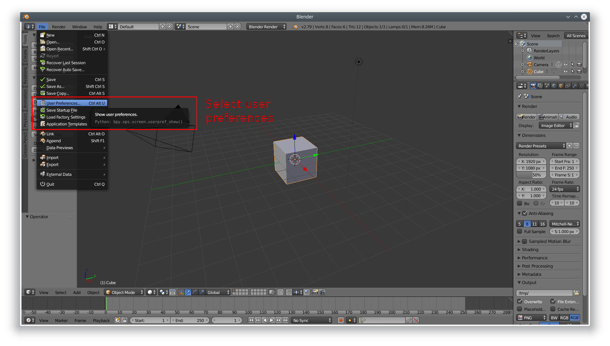
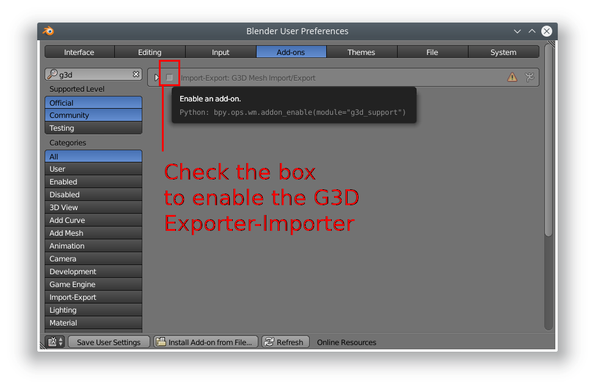
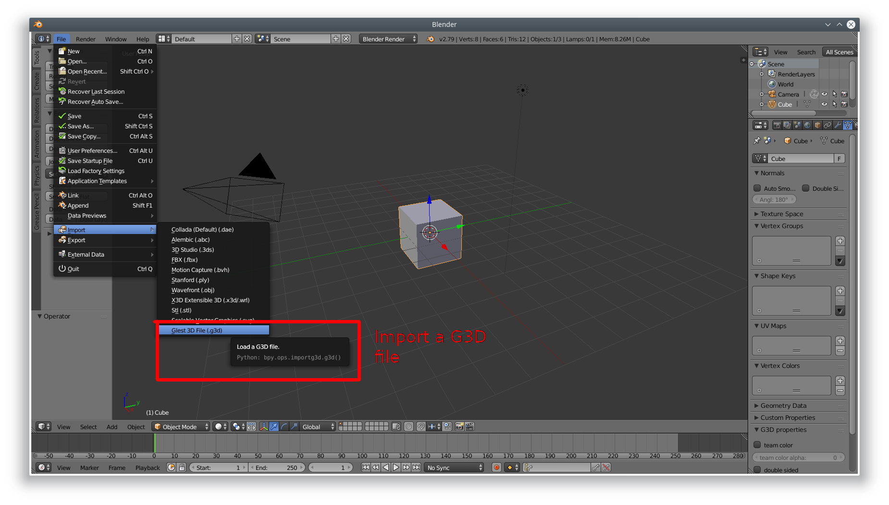
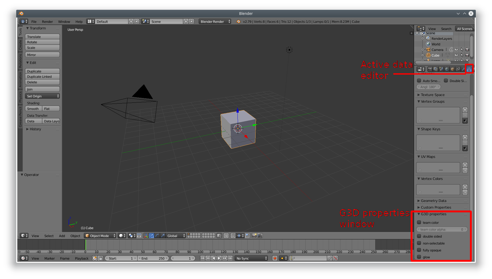
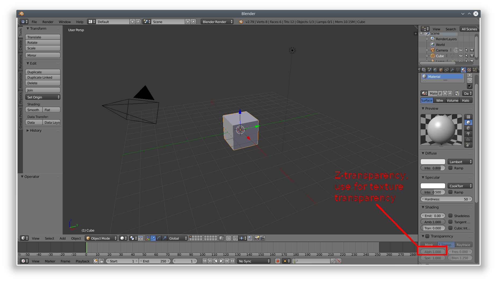

ZetaGlest is currently are restricted to the G3D modeling format. Currently an up-to-date importer and exporter only exist for Blender, requiring that Blender is used for modeling or at least converting imported models. This is done with the G3D support python script, which allows Blender to both import and export G3D models.
This page is based off the MegaGlest docs page.
Download
The script to use depends entirely on the version of Blender used. It is strongly recommended to use the g3d_support.py from the "blender" directory in your game installation.
If the script fails to load, try the most recent blender script: blender_g3d_plugin.py
Installation
- In the info window, under the file option, choose "User Preferences".

- In this new window, switch to the Add-ons tab and click the "Install Add-on from file" button at the bottom.

- In the search box, search for "g3d". The addon will now be found in this window, in the import-export category, under the name "G3D Mesh Import/Export". Tick the checkbox beside it to enable it.
- Note that in order to be able to export in future sessions, you must save the user preferences.
ZetaGlest uses the G3D modelling format exclusively. Currently an
up-to-date importer and exporter only exists for Blender, requiring
that Blender is used for modelling or at least converting imported
models. This is done with the Blender G3D plugin python script, which
allows Blender to both import and export G3D models.
Limitations
- All faces must be triangulated (the 2.6x exporter automatically converts them to triangles before export). Faces can be converted to triangles by selecting all faces and using the hotkey
ctrl + t.
- In old versions, the axis differs in G3D, which might make some trouble with old models. In old versions the Y axis was height, X axis was length, and Z axis was width.
Model Preparation
- The start and end animation frame should be set appropriately. A large number of frames causes a massive filesize. G3D interposition of frames is considerably smoother than viewed in Blender, so models should rarely require more than 30 frames. If the model is unanimated, the start aand end frame should be set to 1 in the timeline window.

- The texture of the model must be properly linked in order for it to appear on the exported G3D model. To link the texture, in the properties window, under the textures tab, with the model selected, set the type to "Image or movie" and open the image.
- In the G3D support panel, under Object Data in the properties window, the g3d object properties can be set:
- Double sided Controls whether or not the object can only be viewed from both sides.
- Team color controls if team colour or transparency is used. Transparent parts ( alpha ) in the texture will be replaced with team colour.
- Team color alpha controls the transparency of the team colour, if team colour or transparency is used.
- Non-selectable objects can't be clicked on to select the unit, such as the pebbles that scatter when a worker is mining.
- Fully opaque which makes the model invisible, but its still selectable!! ( Help to make small units easier to select, such as snakes spiders etc. )
- Glow lets the object glow the way MG's particles "glow".

To make a material partially transparent, in the materials tab of the properties window, check the transparency box and under Z transparency, adjust the alpha slider.

Importing
To import a model from G3D, open the file menu of the info window, choose import, and select "Glest 3D File (g3d)". Choose the file to load and it will be loaded at the origin. Note that animations cannot be imported, only the meshes and UV (texture) coordinates.
Exporting
To export a model to G3D, in object mode, select the meshes you want to export (if nothing is selected, everything will be exported, then open the file menu of the info window, choose export, and select "Glest 3D File (g3d)". Choose a file location and all objects will be exported to G3D (non-compatible objects such as bones, cameras, or lights will not be exported).
To make a material partially transparent, in the materials tab of the properties window, check the transparency box and under Z transparency, adjust the alpha slider.
Troubleshooting
- White model - The texture was not properly linked to the object (detailed above).
- Model is sideways - Model not orientated properly. The Z(blue) axis is height, the X axis is width, and the Y axis is depth, like Blender's defaults.(Warning: Orientation is different in older versions of the script!)
tickets
related to models are in the data repo
The links on the left give detailed information about working on
models for the ZetaGlest project. (The information is not complete
yet)